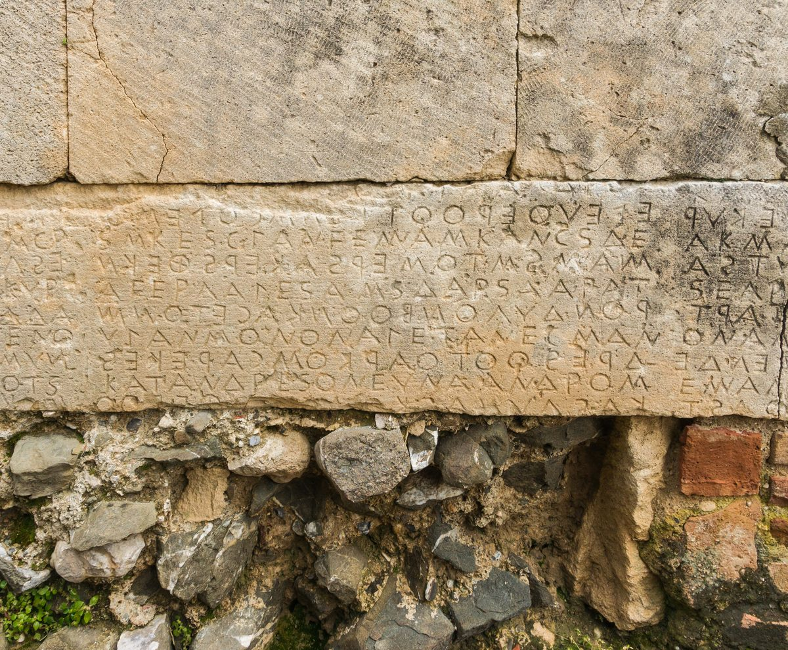

Tito 2 — La Traducción Mister

⚠ Un texto griego arcaico grabado en un muro de Gortina, en Creta, y escrito boustrophēdon, «como gira el buey» al arar, una línea de izquierda a derecha y la siguiente de derecha a izquierda. Creta es donde la carta deja a Tito para enseñar a sus casas (1:5; 2:1).

Notas del traductor
«Pero tú, habla lo que corresponde a la sana enseñanza». «Sana» es hygiainō, la enseñanza saludable de Tito 1:9 y 1 Timoteo 1:10 (diccionario); vuelve dos veces en este capítulo, «sanos en la fe» en el versículo 2 y «palabra sana» en el versículo 8. «Corresponde» traduce prepō, como en 1 Timoteo 2:10, «como corresponde a mujeres que profesan reverencia a Dios». La RV60 dice «Pero tú habla lo que está de acuerdo con la sana doctrina»; la TNM 1987 dice «sigue hablando las cosas que son apropiadas para la enseñanza saludable»; la RV 1909 dice «habla lo que conviene á la sana doctrina».
«Que los ancianos sean sobrios, dignos, sensatos, sanos en la fe, en el amor, en el aguante». Presbytēs, un anciano por la edad, está en tres versículos: el «yo soy anciano» de Zacarías en Lucas 1:18, Pablo en Filemón 1:9, y aquí; es una palabra distinta del presbyteros, «anciano» de la congregación, de Tito 1:5 (diccionario). Nēphalios, «sobrio», está en tres versículos, todos en las cartas Pastorales: el supervisor en 1 Timoteo 3:2, las mujeres en 1 Timoteo 3:11, y estos ancianos (diccionario). «Dignos» es semnos, como en 1 Timoteo 3:8 (diccionario). La fe, el amor y el aguante son la tríada de 1 Tesalonicenses 1:3, donde la perseverancia es «de la esperanza». La RV60 dice «Que los ancianos sean sobrios, serios, prudentes, sanos en la fe, en el amor, en la paciencia»; la TNM 1987 dice «Que los hombres de edad sean moderados en los hábitos, serios, de juicio sano»; la NVI dice «e íntegros en la fe, en el amor y en la constancia».
⚠ «Sensato»: una raíz, cinco palabras en un capítulo. Sōphrōn está hecha de sōs, «a salvo, sano», y phrēn, «mente»: una mente guardada a salvo, buen juicio y dominio de sí. Este capítulo usa la raíz cinco veces: sōphrōn de los ancianos en el versículo 2 y de las jóvenes en el versículo 5 (diccionario); sōphronizō, enseñar la sensatez, en el versículo 4 (diccionario); sōphroneō, ser sensato, de los jóvenes en el versículo 6 (diccionario); y el adverbio sōphronōs, «sensatamente», en el versículo 12, donde la gracia misma lo enseña (diccionario). El sustantivo es la sōphrosynē de 1 Timoteo 2:9 (diccionario). En otros lugares esta traducción dice «de sano juicio» (1 Timoteo 3:2); aquí, donde «sano» pertenece a hygiainō, toda la familia es «sensato», como en Tito 1:8. La RV60 reparte las cinco palabras entre «prudentes» y «sobria», empezando «Que los ancianos sean sobrios, serios, prudentes»; la TNM 1987 dice «de juicio sano» en el versículo 2 y en el versículo 5.
«Las ancianas asimismo, reverentes en su porte, no calumniadoras ni esclavizadas a mucho vino, maestras del bien». Cuatro palabras del versículo no están en ningún otro lugar del Nuevo Testamento: presbytis, «anciana» (diccionario); katastēma, «porte»; hieroprepēs, «propio de lo sagrado», aquí «reverentes» (diccionario); y kalodidaskalos, «maestra del bien» (diccionario). «Calumniadoras» es diaboloi, como en 1 Timoteo 3:11 y 2 Timoteo 3:3 (diccionario). «Esclavizadas» es douloō, el verbo de Gálatas 4:3, «esclavizados bajo los elementos del mundo». La RV60 dice «maestras del bien»; la TNM 1987 dice «no calumniadoras, ni esclavizadas a mucho vino»; la NVI dice «ni adictas al mucho vino».
«Para que enseñen la sensatez a las jóvenes, a amar a sus maridos, a amar a sus hijos». Sōphronizō, «enseñar la sensatez, hacer entrar en razón», está en un solo versículo del Nuevo Testamento. Philandros, «que ama a su marido», está también en un solo versículo (diccionario), y lo mismo philoteknos, «que ama a sus hijos» (diccionario). Son dos palabras más en phil-, puestas frente a los «amantes de sí mismos» de 2 Timoteo 3:2. Las ancianas enseñan a las jóvenes; a Tito mismo no se le dice que lo haga. La TNM 1987 dice «para que hagan recobrar el juicio a las mujeres jóvenes»; la RV60 dice «que enseñen a las mujeres jóvenes a amar a sus maridos y a sus hijos»; la RV 1909 dice «Que enseñen á las mujeres jóvenes á ser predentes».
⚠ «Sensatas, puras, trabajadoras en casa, buenas». Oikourgos, «que trabaja en casa», está en un solo versículo del Nuevo Testamento, la lectura de Westcott y Hort, Tregelles y el Nestle-Aland (diccionario); el texto bizantino trae oikouros, «que guarda la casa, que se queda en casa», y así la RV 1909: «que tengan cuidado de la casa». Las viudas jóvenes de 1 Timoteo 5:14 han de «gobernar su casa». «Puras» es hagnos, como en 1 Timoteo 5:22, «consérvate puro». La TNM 1987 dice «trabajadoras en casa, buenas»; la RV60 dice «cuidadosas de su casa».
⚠ «Sujetas a sus propios maridos, para que la palabra de Dios no sea blasfemada». «Sujetas» es hypotassō, el verbo de Colosenses 3:18, «Esposas, sométanse a sus maridos», y de Efesios 5:21, «sometiéndose unos a otros en el temor de Cristo». La finalidad es la que se da para los esclavos en 1 Timoteo 6:1, «para que no se blasfeme el nombre de Dios ni la enseñanza», y hace eco de Romanos 2:24, tomado de Isaías 52:5. Los lectores entienden la línea de tres maneras: como un orden permanente del matrimonio; como una instrucción formada por la finalidad que ella misma declara, el buen nombre de la enseñanza en una sociedad que lo esperaba; o como un lado de la sumisión mutua de Efesios 5:21. Las iglesias han construido sobre cada lectura, y esta página las pone lado a lado sin elegir. La RV60 dice «sujetas a sus maridos, para que la palabra de Dios no sea blasfemada»; la TNM 1987 dice «sujetas a sus propios esposos»; la NVI dice «para que no se hable mal de la palabra de Dios».
«Exhorta asimismo a los jóvenes a ser sensatos, mostrándote en todo como ejemplo de buenas obras». Los «jóvenes» son los «hermanos» de 1 Timoteo 5:1. «Ser sensatos» es sōphroneō, el verbo del hombre «en su sano juicio» en Marcos 5:15 y del «piense con sensatez» de Romanos 12:3. «En todo» puede cerrar el versículo 6, «sensatos en todo», o abrir el versículo 7, como se imprime aquí. «Ejemplo» es typos, como en 1 Timoteo 4:12, «sé ejemplo para los creyentes» (diccionario). Las «buenas obras» son el estribillo de la carta, de Tito 1:16 al versículo 14. La RV60 dice «Exhorta asimismo a los jóvenes a que sean prudentes»; la NVI dice «A los jóvenes, exhórtalos a ser sensatos»; la TNM 1987 dice «en todas las cosas mostrándote tú mismo ejemplo de obras excelentes».
«En tu enseñanza, integridad, dignidad, palabra sana e irreprochable». Aphthoria, «integridad, incorrupción», está en un solo versículo del Nuevo Testamento (diccionario); el texto bizantino trae adiaphthoria y añade aphtharsia. Semnotēs, «dignidad», está en tres versículos: 1 Timoteo 2:2, 1 Timoteo 3:4 y este. Akatagnōstos, «irreprochable, que no se puede condenar», está en un solo versículo (diccionario). La RV60 dice «en la enseñanza mostrando integridad, seriedad»; la TNM 1987 dice «mostrando incorrupción en tu enseñanza, seriedad»; la RV 1909 dice «Palabra sana, é irreprensible».
«Para que el que está en el bando contrario se avergüence, no teniendo nada malo que decir de nosotros». Ho ex enantias, «el que está en el lado opuesto», es la expresión del centurión «que estaba de pie frente a él» en Marcos 15:39. «Se avergüence» es entrepō, como en 2 Tesalonicenses 3:14, «para que se avergüence». «Malo» es phaulos (diccionario). El texto impreso dice «de nosotros»; el Textus Receptus dice «de vosotros», y así la RV60: «y no tenga nada malo que decir de vosotros». La TNM 1987 dice «al no tener nada vil que decir acerca de nosotros»; la NVI dice «pues no podrá decir nada malo de nosotros».
⚠ El uso que se dio a estos versículos. En 1841 Thornton Stringfellow publicó A Brief Examination of Scripture Testimony on the Institution of Slavery, una defensa bíblica de la esclavitud estadounidense, y entre sus textos cita estos dos versículos en las palabras de la King James inglesa: «servants be obedient to their own masters, and please them well in all things», «not answering again, not purloining, but showing all good fidelity» (leído en la copia de civilwarcauses.org). Usa de la misma manera 1 Timoteo 6:1. Es una mala lectura de lo que hacen los versículos. Dan instrucciones a personas que ya estaban esclavizadas, dentro de un orden doméstico que la carta no creó, y la razón que dan es el buen nombre de «la enseñanza de Dios nuestro Salvador»; no dicen que la institución sea buena ni que deba existir. En otro lugar Pablo le dice a un esclavo: «si también puedes hacerte libre, aprovéchalo más bien» (1 Corintios 7:21), y pide a Filemón que reciba a Onésimo «ya no como esclavo, sino como más que esclavo, como hermano amado» (Filemón 1:16).
«Que los esclavos se sujeten a sus propios dueños en todo, que sean agradables, que no sean respondones». «Dueños» es despotēs, el amo de esclavos, como en 1 Timoteo 6:1 (diccionario). «En todo» va con «se sujeten» en el texto impreso y con «agradables» en la puntuación bizantina. «Agradables» es euarestos, la palabra de Romanos 12:1, «agradable a Dios». «Respondones» traduce antilegō, el verbo de «los que contradicen» en Tito 1:9 (diccionario). La RV60 dice «Exhorta a los siervos a que se sujeten a sus amos, que agraden en todo, que no sean respondones»; la TNM 1987 dice «Que los esclavos estén en sujeción a sus dueños en todas las cosas»; la NVI dice «y a no ser respondones».
«Que no sisen, sino que muestren toda buena fidelidad, para que en todo adornen la enseñanza de Dios nuestro Salvador». Nosphizomai, «quedarse con algo para sí», está en tres versículos: Ananías, que «se quedó con parte del precio», en Hechos 5:2 y 5:3, y aquí (diccionario). El griego de Josué 7:1 lo usa de Acán y las cosas consagradas (griego comprobado). «Adornen» es kosmeō, el verbo de las mujeres que «se adornen» en 1 Timoteo 2:9. «Dios nuestro Salvador» es el título de Tito 1:3 y 1 Timoteo 1:1. La RV60 dice «no defraudando, sino mostrándose fieles en todo»; la TNM 1987 dice «no cometiendo robos»; la RV 1909 dice «para que adornen en todo la doctrina de nuestro Salvador Dios».
«Porque ha aparecido la gracia de Dios, trayendo salvación a todos los seres humanos». Epiphainō, «aparecer, resplandecer», está en cuatro versículos: el amanecer que va a «alumbrar a los que están sentados en tinieblas» en Lucas 1:79, el sol y las estrellas que no «aparecían» en Hechos 27:20, este, y Tito 3:4. Aquí la gracia «ha aparecido», y en el versículo 13 todavía se aguarda la «aparición» (diccionario). Sōtērios, «que trae salvación», el adjetivo, está en un solo versículo (diccionario); su neutro es la «salvación» que Simeón tiene en brazos en Lucas 2:30 (diccionario). «A todos los seres humanos» se lee con «trayendo salvación» o con «ha aparecido». La RV60 dice «Porque la gracia de Dios se ha manifestado para salvación a todos los hombres»; la RV 1909 dice «Porque la gracia de Dios que trae salvación á todos los hombres, se manifestó»; la TNM 1987 dice «Porque la bondad inmerecida de Dios que trae salvación a toda clase de hombres se ha manifestado».
«Educándonos para que, renunciando a la impiedad y a los deseos mundanos, vivamos sensata, justa y piadosamente en el siglo presente». «Educándonos» traduce paideuō, el verbo de 1 Timoteo 1:20, «para que aprendan», y de 2 Timoteo 2:25, «instruyendo»; la gracia es la maestra. «Renunciando» es el verbo de Tito 1:16, «con los hechos lo niegan». Kosmikos, «mundano», está en dos versículos: aquí y Hebreos 9:1. «Piadosamente» es eusebōs, como en 2 Timoteo 3:12; «el siglo presente» es la frase de 1 Timoteo 6:17 y 2 Timoteo 4:10. La RV60 dice «vivamos en este siglo sobria, justa y piadosamente»; la TNM 1987 dice «y nos instruye a repudiar la impiedad y los deseos mundanos»; la NVI dice «y nos enseña a rechazar la impiedad y las pasiones mundanas».
⚠ «La aparición de la gloria de nuestro gran Dios y Salvador, Jesucristo»: ¿una persona o dos? El griego es tou megalou theou kai sōtēros hēmōn Iēsou Christou: un solo artículo va delante de «gran Dios», y «Salvador» no tiene artículo propio. Los lectores lo entienden de tres maneras. Primera, como una persona: Jesucristo es «nuestro gran Dios y Salvador», según la regla que lleva el nombre de Granville Sharp, que dos sustantivos singulares de persona unidos por «y» bajo un solo artículo nombran a una sola persona (la regla se informa aquí, no se comprobó); así la RV60, «la manifestación gloriosa de nuestro gran Dios y Salvador Jesucristo». Segunda, como dos personas: «Salvador» puede estar sin artículo propio como título, y el gran Dios y el Salvador Jesucristo son dos; así la TNM 1987, «la gloriosa manifestación del gran Dios», que sigue añadiendo entre corchetes la contracción «de[l]» ante «Salvador». Tercera, Jesucristo es él mismo «la gloria» del gran Dios que aparece. La misma forma está en 2 Pedro 1:1, donde esta traducción imprime «nuestro Dios y Salvador Jesucristo»; en 2 Tesalonicenses 1:12, con «Señor» en lugar de «Salvador», imprime dos personas. Esta traducción imprime aquí la primera lectura, como en 2 Pedro 1:1; la gramática se argumenta en los dos sentidos, y esta página no decide entre las lecturas. Westcott y Hort y Tregelles imprimen «Cristo Jesús».
«Que se dio a sí mismo por nosotros para redimirnos de toda iniquidad y purificar para sí un pueblo como posesión atesorada, celoso de buenas obras». «Se dio a sí mismo» es la frase de 1 Timoteo 2:6 y Gálatas 1:4. Lytroō, «redimir, rescatar», está en tres versículos: «el que iba a redimir a Israel» en Lucas 24:21, este, y 1 Pedro 1:18 (diccionario). Las palabras se parecen al griego del Salmo 130:8 (129:8 en la numeración griega), «él redimirá a Israel de todas sus iniquidades», y de Ezequiel 37:23, «los purificaré, y serán mi pueblo» (ninguno todavía en estas páginas; griego comprobado). Periousios, «propio, atesorado», está en un solo versículo del Nuevo Testamento; es el griego de «mi posesión atesorada» en Éxodo 19:5 y de Deuteronomio 7:6, Deuteronomio 14:2 y Deuteronomio 26:18 (griego comprobado; diccionario, diccionario). «Celoso» es zēlōtēs (diccionario). La RV60 dice «y purificar para sí un pueblo propio, celoso de buenas obras»; la TNM 1987 dice «un pueblo peculiarmente suyo»; la NVI dice «un pueblo elegido, dedicado a hacer el bien».
«Habla estas cosas, y exhorta y reprende con toda autoridad». «Autoridad» es epitagē, el «mandato de Dios» de Tito 1:3 y 1 Timoteo 1:1 (diccionario). «Reprende» es el verbo de 2 Timoteo 4:2. Periphroneō, «tener en menos, pasar por alto», está en un solo versículo del Nuevo Testamento (diccionario); está cerca del «tenga en poco» de 1 Timoteo 4:12. La RV60 dice «Esto habla, y exhorta y reprende con toda autoridad»; la TNM 1987 dice «con plena autoridad para mandar»; la RV 1909 dice «Esto habla y exhorta, y reprende con toda autoridad».
Patrones que vale la pena recordar
Dónde esta traducción conserva las palabras exactas: «sana» para hygiainō tres veces, como en 1:9; «sensato», «sensatez» y «sensatamente» para las cinco palabras de una raíz, como en 1:8; «sobrios» y «dignos», como en 1 Timoteo 3; «calumniadoras» para diaboloi; «a amar a sus maridos, a amar a sus hijos» para dos palabras en phil-; «trabajadoras en casa», la palabra del texto impreso; «ejemplo», como en 1 Timoteo 4:12; «esclavos» y «dueños»; «sisar», el verbo de Ananías; «adornar», como en 1 Timoteo 2:9; «ha aparecido» y «aparición» para una raíz; «renunciando», el verbo de 1:16; «nuestro gran Dios y Salvador», como en 2 Pedro 1:1, con las lecturas en la nota; «redimir», como en Lucas 24:21; «posesión atesorada», como en Éxodo 19:5; y «buenas obras».
Ecos pagados. La sana enseñanza de Tito 1:9; sobrios y dignos, de 1 Timoteo 3:8 y 1 Timoteo 3:11; los amantes de sí mismos de 2 Timoteo 3:2, frente a las que aman a sus maridos y a sus hijos; blasfemada, de 1 Timoteo 6:1; el ejemplo de 1 Timoteo 4:12; sisar, de Hechos 5:2; adornar, de 1 Timoteo 2:9; Dios nuestro Salvador de Tito 1:3; negar, de Tito 1:16; el siglo presente de 1 Timoteo 6:17; la aparición de 2 Timoteo 4:8; redimir, de Lucas 24:21; la posesión atesorada de Éxodo 19:5; y las buenas obras de Tito 1:16.
Ecos sembrados. «Dispuestos a toda buena obra» en 3:1; la benignidad de Dios nuestro Salvador que «apareció», el verbo del versículo 11, en 3:4; «el lavamiento de la regeneración» en 3:5; y las «buenas obras» otra vez en 3:8 y 3:14.
A continuación en este libro: Tito 3, ya en estas páginas. La sujeción a las autoridades, «apareció la benignidad y el amor por la humanidad de Dios nuestro Salvador», «el lavamiento de la regeneración», y los últimos nombres: Ártemas, Tíquico, Zenas el jurista y Apolos.